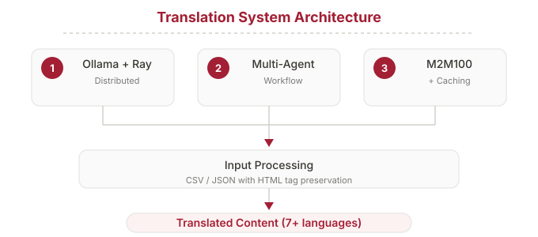

LLM De-Identification & Translation
Agentic Systems for Medical Data Processing

Agentic Systems for Medical Data Processing
Medical data processing requires strict HIPAA/GDPR compliance while enabling research and international collaboration. This project develops two AI-powered systems: automated de-identification of Protected Health Information (PHI) across multiple modalities, and multilingual translation of medical documents with quality assurance.
Medical images and documents contain PHI embedded in multiple modalities: burned-in text on images, DICOM metadata, PDF documents, and handwritten annotations. Manual de-identification is time-consuming and error-prone.

International regulatory submissions require accurate, consistent translation of medical documents. LLM-based translation can suffer from hallucinations that introduce dangerous inaccuracies — so quality assurance is built into every layer.

